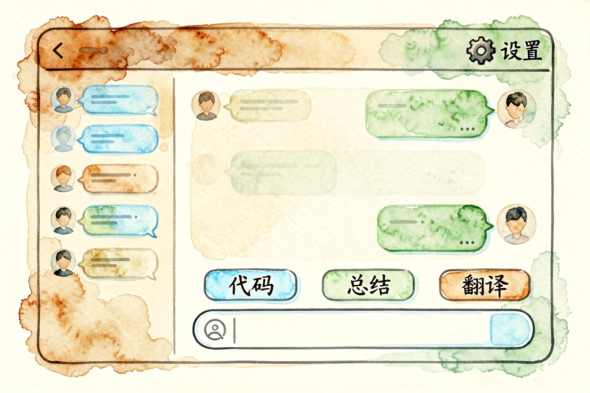
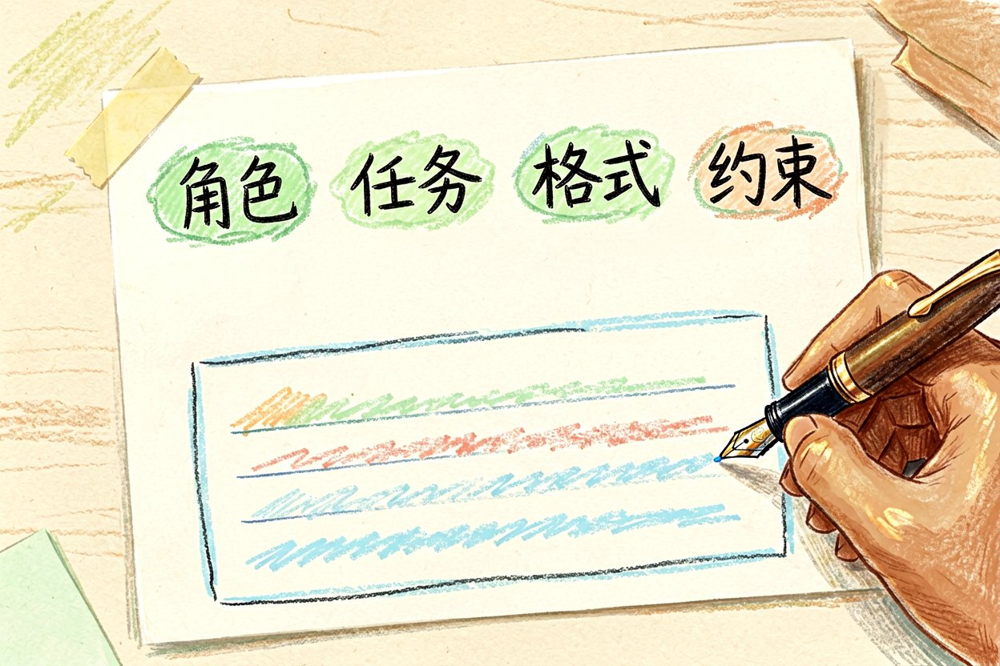
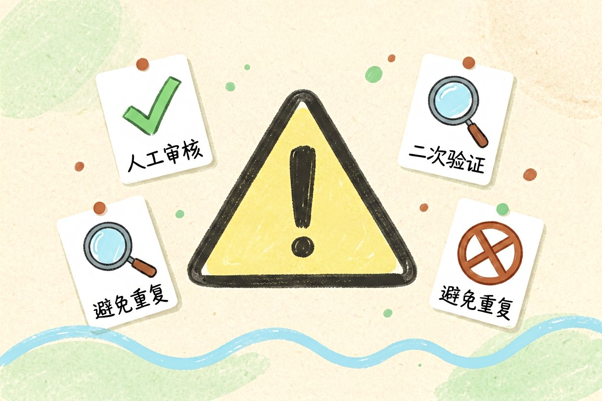

ChatGPT 新手入门：从零到日常使用的完整教程
不懂技术也能用ChatGPT提升效率，从注册到写出高质量提示词，跟着这五步走就能上手。
ChatGPT新手入门是本文的核心主题。 !配图1界面概览
{kind=link}
ChatGPT新手入门：注册账号与设置
ChatGPT 是 OpenAI 开发的对话式 AI，能理解你的文字并给出回应。新手从 chat.openai.com 注册，免费版每天有消息限制，但对日常使用够用。付费版 Plus 每月 20 美元，解锁更多功能。
注册后先做两件事：把界面语言设为中文，关闭不必要的数据收集选项。中文界面降低理解门槛，新手更容易上手。数据收集关闭后，你的对话不会被用于模型训练，隐私更安全。手机用户建议下载官方 App，随时提问更方便。
ChatGPT新手入门：写出高质量的提示词

提示词是 AI 回答质量的关键。一个结构清晰的提示词包含四个要素：角色、任务、背景、输出格式。比如：
你是资深编辑（角色）。
帮我写一篇800字的公众号推文（任务）。
主题关于AI办公工具，目标读者是职场新人（背景）。
用分点结构，每点配一个例子（输出格式）。这和AI 提示词怎么写里的 C.L.E.A.R. 框架一致。新手别急着写完整文章，先让 AI 出大纲，再逐段展开。一次生成太长容易跑偏，分段控制更稳。
ChatGPT新手入门：五个高频场景实战

场景一：写邮件和文案直接告诉 AI 收件人、目的、语气要求。比如「写一封正式邮件给客户，说明项目延期三天，语气诚恳但不推卸责任」。生成的初稿再微调，效率比从零写高很多。
场景二：总结长文章把文章粘贴进去，说「用五句话总结核心观点，每句话不超过20字」。适合快速消化周报、行业报告。
场景三：学习新知识问「用初中生能听懂的话解释量子计算」，AI 会换一种表达降低理解门槛。遇到不懂的术语，让它举例说明。
场景四：头脑风暴 「给我十个关于健康饮食的选题，要求新颖不烂大街」。AI 能快速产出大量想法，你挑合适的再深入。
场景五：代码辅助即使不会编程，也能让 AI 写简单脚本。比如「写一个 Python 脚本，批量把文件夹里的图片重命名」。输出后让它加注释，方便理解。
ChatGPT新手入门：常见错误与避坑
新手最常犯的错误是提示词太模糊。「帮我写点东西」这种问法，AI 只能猜你的意图。其次是不验证输出，直接复制粘贴，容易出错。最后是过度依赖，养成思考习惯比问 AI 更重要。
记住三件事：提示词越具体越好、重要信息要二次核实、AI 是工具不是替代。这三条能挡掉绝大多数问题。
关于 ChatGPT 新手入门，实践比阅读教程更重要。别看完就忘，当天就用一次，让身体记住操作流程。用多了自然熟练，不用死记硬背。
ChatGPT新手入门的关键是动手试。别等完美提示词再开始，先问再改，边用边学才是正确姿势。掌握 ChatGPT 的技巧，效率会翻倍。

本文信息核对于 2026-09-07。AI 产品的价格、免费额度与功能变动频繁，实际以各工具官网当前说明为准。